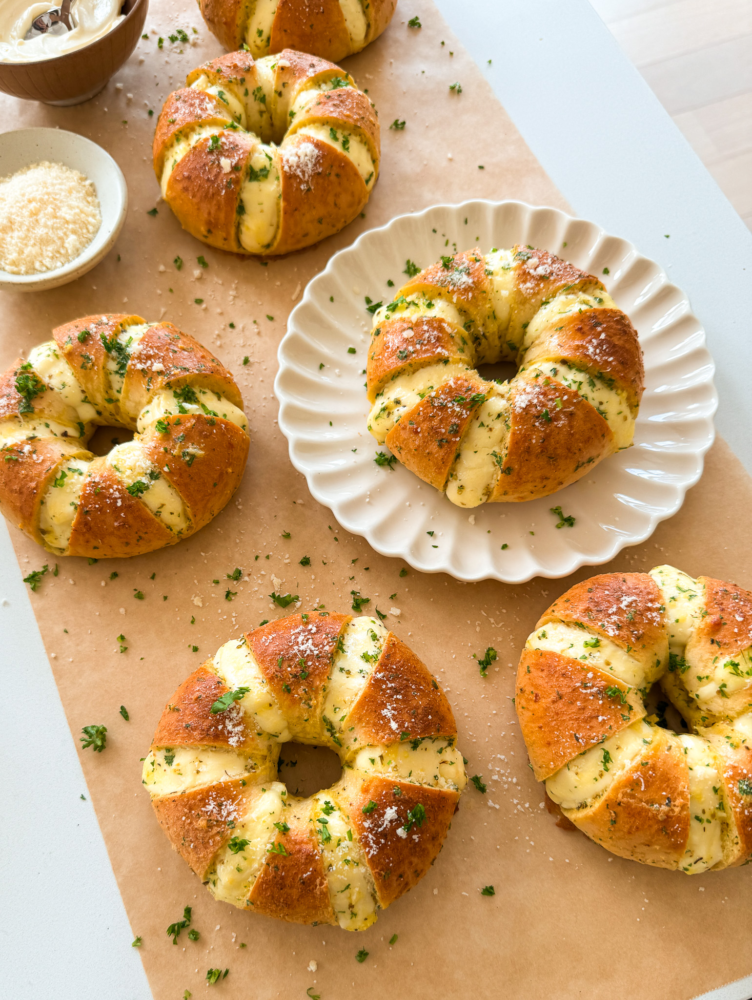

the Starving Artist cookbook
TIRAMISU CUPS
Prep time:1 Hour Total time:1 HOUR Yields:12 CUPS

INGREDIENTS
- 5 egg yolks
- 2/3 cup white sugar
- 1 1/3 cup heavy cream
- 16 ounces mascarpone cheese
- 2 teaspoons vanilla extract
DIRECTIONS
-
In a medium-sized mixing bowl, whisk together the egg yolks
and sugar until thickened and lighter in color.
-
In a separate large mixing bowl, beat the heavy cream and
vanilla extract until stiff peaks form
-
Gently fold the mascarpone cheese
into the egg yolk mixture until smooth and creamy.
-
Gradually fold in the whipped cream until the mixture
is well combined and creamy. Be gentle to maintain
the fluffy texture.
-
In a shallow dish, mix the cold espresso with the
brown sugar until the sugar is dissolved.
-
Dip each ladyfinger into the espresso mixture for
a few seconds, ensuring they are soaked but not soggy.
-
In individual serving cups or
glasses, place a layer of soaked ladyfingers at the bottom.
-
In individual serving cups or glasses,
place a layer of soaked ladyfingers at the bottom.
-
Spoon a layer of the cream filling over the ladyfingers,
spreading it evenly.
-
Cover the tiramisu cups with plastic wrap and
refrigerate for at least 4 hours, or overnight,
to allow the
flavors to meld and the dessert to set.
-
Serve chilled and enjoy your delicious individual tiramisu
cups!
CREAM CHEESE STUFFED
GARLIC BAGEL
Prep time:1 Hour Total time:1 HOUR Yields:12 CUPS

INGREDIENTS
- 6 bagels
- Cream cheese filling
- 8 ounces cream cheese, softened/room temp
- 1 tablespoon granulated white sugar
- 1 tablespoon sweetened condensed milk
- pinch of salt
- garlic butter
- 1 egg
- 1/2 cup unsalted butter, melted
- 2 tablespoons minced garlic
- 1 1/2 tablespoons chopped parsley
- 2 tablespoons milk
- 1 to 2 tablespoons kewpie mayo
- 1 teaspoon oregano
- 3 tablespoons grated parmesan
- 1/2 teaspoon salt
DIRECTIONS
- To a mixing bowl, add the cream cheese, granulated white
sugar, sweetened condensed milk, and a pinch of salt.
-
Use a stand mixer or hand mixer
and whisk until smooth. Set aside.
-
To a bowl, add the egg, melted butter,
minced garlic, chopped parsley, milk, mayo,
oregano, grated parmesan, and salt.
- Preheat oven to 350°F.
-
Make 6 cuts across each bagel but do not make the cuts going
all the way down. Cut a small section out of each cut to make
room for the cream cheese filling.
- Using a piping bag or ziploc bag with the tip cut off, fill
the bagel with the cream cheese filling in each of the cuts.
- Once all the bagels are filled, dunk each of them in
the garlic butter. Fully submerge it, then let any excess drip
off, and place it on a baking tray lined with parchment paper.
- Bake in the oven for
11 to 13 minutes or until golden brown all around.
- Once out of the oven, garnish with more chopped parsley and
grated parmesan. Allow to cool down and then enjoy!
CRISPY FETA CHIPOTLE
TACOS
Prep time:1 Hour Total time:1 HOUR Yields:12 CUPS

INGREDIENTS
-
2 pounds boneless and skinless chicken thighs or chicken breast
- 1/4 cup olive oil, chopped
- 7-ounce can chipotle peppers in adobo paste, remove the chipotle
peppers
- 2 teaspoons fresh garlic or 1/2 tsp garlic powder
- 1/2 tablespoon chili powder
- 1 1/2 teaspoon salt to taste
- 1 teaspoon coriander
- 1 teaspoon oregano
- 1 teaspoon black pepper
- 1 teaspoon cumin
- drizzle of vegetable oil, for the pan
- 1 cup feta cheese, crumbled
- 8 mini flour tortillas
- oil, for coating the pan
- shredded lettuce
- avocado
- corn
- sour cream
DIRECTIONS
-
To a large bowl, add the chicken, olive oil, adobo paste, chili
powder, garlic, salt, coriander, oregano, black pepper, and cumin.
Mix all together to coat the chicken evenly in the marinade.
-
Heat a cast-iron skillet over medium-high heat. Once it's hot,
add a drizzle of oil to the pan. Add the chicken in.
-
Allow it to sear for 2 to 3 minutes before shaking it around and
cooking for 2 to 3 minutes on all sides until fully cooked through.
-
Add a splash of water to the pan if needed to deglaze the pan.
Scrape the bottom of the pan to get all the crispy flavorful bits
stuck at the bottom.
-
Heat a non-stick skillet/pan over medium heat.
Add a light drizzle of oil to the skillet
-
Once hot, add about 2 tablespoons of crumbled feta cheese to the
skillet and spread it out in an even layer.
-
Place a flour tortilla on top of the feta cheese in the skillet,
pressing it down gently to adhere to the cheese.
-
Let the tortilla cook for about 2-3 minutes, or until the bottom
and edges are golden brown and crispy. Remove from the pan and
repeat with the rest of the tortillas.
-
o the feta-crusted tortilla, add lettuce, chipotle chicken, av
ocado, corn, and sour cream. Feel free to tweak the toppings to
your taste and enjoy!